Realice los ejercicios que se presentan a continuación con el objetivo de evaluar su comprensión del tutorial.
Para verificar sus respuestas, haga clic en el botón "Solución".
Para ocultar las respuestas, simplemente haga clic nuevamente en el botón "Solución".
1.-Encuentre cuáles de las siguientes secuencias de vértices son trayectorias simples, trayectorias,
trayectorias cerradas ( circuitos) y circuitos simples con respecto a la gráfica que se muestra en la
siguiente figura:
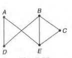
a) A - D - E - B - C no es una trayectoria, ya que DE no es una arista de la gráfica dada.
b) A - D - B - C - E es una trayectoria simple entre los vértices A y E, puesto que los vértices y las
aristas implicados son distintos.
e) A - E - C - B - E - A es una trayectoria cerrada, en vista de que los vértices inicial y final son
los mismos y el vértice E aparece dos veces.
d) C - B - D - A - E - Ces un circuito simple, ya ·que los vértices inicial y final son los mismos y los
vértices y las aristas son distintos.
e) A -D - B - E - C - B es una trayectoria (pero no simple) puesto que el vértice B aparece dos
veces.
2.-Encuentre todas las trayectorias simples de A a F y todos los circuitos en la gráfica dada en la siguiente
figura.
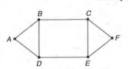
Las trayectorias simples de A a F son las siguientes:
1. A - B - C - F;
2. A - D - E - F;
3. A- B - D - E - F ;
4. A - D - B - C - F;
5. A - B - C-E - F; E
6. A - D - E - C - F;
7. A - B - D - E - C - F;
8. A - D - B - C - E-F
Los circuitos en la gráfica son los siguientes:
1. A - B - D - A;
2. C - F - E - C;
3. B - C - E - D-B;
4. A - B - C-E-D - A;
5. B - C-F- E - D - B;
6. A - B-C - F - E - D - A.
3.-Determine todas las subgráficas conectadas de la gráfica que se muestra en la siguiente figura
que contiene todos los vértices de la gráfica original y que tiene el menor número de aristas posible.
¿En estas subgráficas cuáles son trayectorias y cuáles son trayectorias simples de A a G?
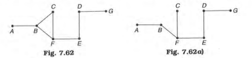
Las gráficas en las figuras 7.62a), 7.62b) y 7.62c) son las subgráficas conectadas requeridas.
Sin embargo, no hay componentes conectados de la gráfica original en la figura 7.62.
En la figura 7.62 a), A - B - F - E - D - G es una trayectoria simple de A a G, en tanto que A - B - F - C -
F - E - D - G
es una trayectoria de A a G En la figura 7.62 b), A - B - F - E - D - G es una trayectoria simple,
donde~ A - B - C - B - F - E - D - G es una trayectoria. En la figura 7.62 c), A - B - e -- F- E - D - G
es una trayectoria simple que contiene todos los vértices de la gráfica original. No hay trayectorias
cerradas y
circuitos en las subgráficas,
en tanto que éstos están presentes en la gráfica original.
4.- Encuentre analíticamente el número de trayectorias de longitud 4 desde el vértice D hasta el vértice E en
la gráfica no dirigida que se muestra en la figura 7.65. Identifique esas trayectorias a partir de las gráficas.
La matriz de adyacencia de la gráfica dada es:
La entrada en la posición entre paréntesis (4 - 5)-ésima de A4 es 6. En consecuencia,
hay 6 trayectorias cada una de longitud 4 de D a E.
Aquellas 6 trayectorias identificadas a partir de las gráficas dadas son como sigue:
1. D - A - D - C - E
2. D - C - D - C - E
3. D - A - B - C - E
4. D - C - E - C - E
5. D - C - E - B - E
6. D - C - B - C - E
5.- Encuentre analíticamente el número de trayectorias de longitud 4 desde el vértice B hasta el vértice D
en la gráfica dirigida que se muestra en la figura 7.66.
Nombre esas trayectorias utilizando la gráfica.
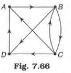
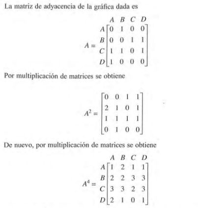
La entrada en la posición (BD) de A4 es 3. En consecuencia, hay 3 trayectorias cada una de longitud 4 de B a
D.
Hay (1) B - C - B - C - D, (2) B - C - A - B - D y (3) B - D -A - B - D.
6.- Proporcione un ejemplo de una gráfica que contenga i) un circuito euleriano que es también un circuito
hamiltoniano
ii) un circuito euleriano y un circuito hamiltoniano que son distintos iii) un circuito euleriano, pero no un
circuito
hamiltoniano iv) un circuito hamiltoniano, pero no un circuito euleriano
v) ni un circuito euleriano ni un circuito hamiltoniano.
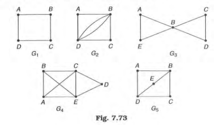
i) El circuito A - B - C - D - A en G1 consta de todas las aristas y de todos los vértices, cada uno
exactamente una vez. G 1 contiene un circuito que es tanto euleriano como hamiltoniano.
ii) G2 contiene e l circuito euleriano A - B - D - B - C - D - A yc circuito hamiltoniano A - B - C - D - A,
pero los dos circuitos son diferentes.
iii) G3 contiene al circuito euleriano A - B - C - D - B - E - A, pero el circuito no es hamiltoniano, ya
que el vértice B se repite dos veces.
iv) G4 contiene a l circuito hamiltoniano A - B - C - D - E - A. Sin embargo, no contiene un circuito
euleriano, ya que hay 4 vértices cada uno de grado 3.
v) En G5 el grado de B y el grado de D son iguales a 3. En consecuencia, no hay un circuito de Euler en
ella. Además, ningún circuito pasa exactamente una vez a través de cada uno de los vértices.
7.- Encuentre la matriz de la distancia más corta y la correspondiente matriz de la trayectoria más corta para
todos los pares de vértices en la gráfica no dirigida ilustrada en la figura 7.75, utilizando el algoritmo de
Warshall.
La matriz ponderada de la gráfica que se indica está dada por:
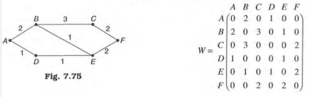
La matriz de la distancia (longitud) inicial L0 se obtiene de W
sustituyendo cada uno de los O que no están en la diagonal por oo. De tal modo:
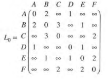
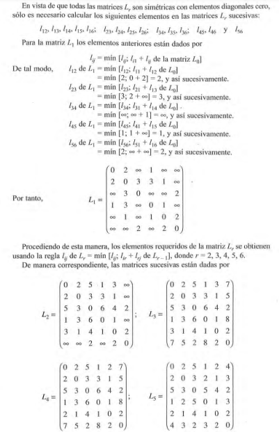
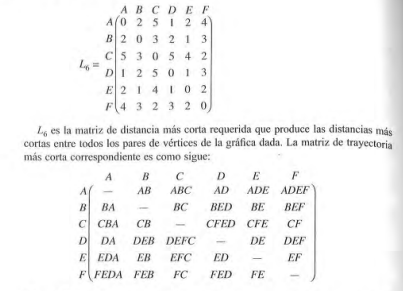
8.- Determine la matriz de distancia más corta y la correspondiente matriz de trayectoria más
corta para todos los pares de vértices en la gráfica ponderada dirigida que se presenta en la figura 7.76,
utilizando el algoritmo de Warshall. La matriz ponderada de la gráfica que se ilustra es:
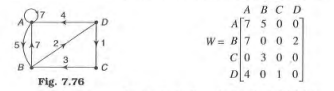
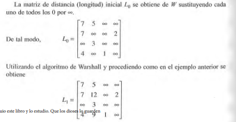
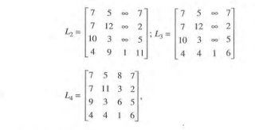
9.- Encuentre una trayectoria hamiltoniana o un circuito hamiltoniano,
si éstos existen en cada una de las 3 gráficas de la figura 7.72.
Si éstos no existen, explique por qué.
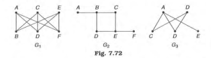
G1 contiene un circuito hamiltoniano, por ejemplo, A - B - C - D - E - F - A. De hecho, hay 5 circuitos
hamiltonianos más en G1,
a saber, A - B - C- F - E - D - A, A - B - E - D - e - F - A, A - B - E - F - e - D - A, A - D - e - B -
E - F - A y A - D - E - B - C - F - A.
G2 no contiene ni una trayectoria hamiltoniana ni un circuito hamiltoniano, ya que ninguna trayectoria
que contenga todos los vértices debe contener una de las aristas A - B y E - F más de una vez. G3
contiene 2 trayectorias hamiltonianas de C a E y de D a E, a saber,
C - B - D - A - E y D - B - C - A - E, pero ningún circuito hamiltoniano.
10.- Emplee el algoritmo de Dijkstra para encontrar la trayectoria más corta entre los vértices A y H en la
gráfica ponderada que se ilustra en la figura 7.74.
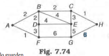
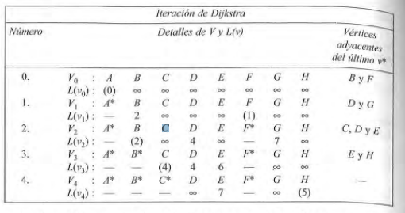
Puesto que H se alcanza desde C, C se alcanza desde By B se alcanza a partir de A, la trayectoria más
corta es A - B - C - H.
Longitud de la trayectoria más corta = w(AB) + w(BC) + w(CH) = 2 + 2 + 1 = 5.